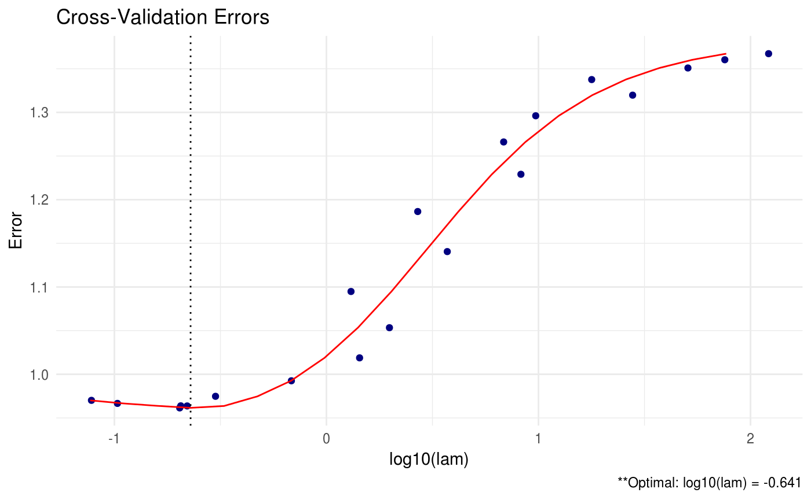

Overview
shrink is an implementation of the methods described in “Shrinking Characteristics of Precision Matrix Estimators” pdf. It estimates a penalized precision matrix via a modified alternating direction method of multipliers (ADMM) algorithm.

A (possibly incomplete) list of functions contained in the package can be found below:
shrink()computes the estimated precision matrixdata_gen()data generation function (for convenience)plot.shrink()produces a heat map or line graph for cross validation errors
Installation
# The easiest way to install is from GitHub:
# install.packages("devtools")
devtools::install_github("MGallow/shrink")If there are any issues/bugs, please let me know: github. You can also contact me via my website. Pull requests are welcome!
Usage
library(SCPME)
set.seed(123)
# let's generate some data!
# specify marginal covariance of X
# note that the inverse is tri-diagonal (sparse)
Sxx = matrix(0.7, nrow = 5, ncol = 5)
for (i in 1:5){
for (j in 1:5){
Sxx[i, j] = Sxx[i, j]^abs(i - j)
}
}
# now randomly generate some 100 observations of X
Z = matrix(rnorm(100*5), nrow = 100, ncol = 5)
out = eigen(Sxx, symmetric = TRUE)
Sxx.sqrt = out$vectors %*% diag(out$values^0.5) %*% t(out$vectors)
X = Z %*% Sxx.sqrt
# randomly generate regression coefficients
betas = matrix(rnorm(5, 0, sqrt(1/5)), nrow = 5, ncol = 1)
# we will also assume a sparse matrix here
betas = betas*matrix(rbinom(5, 1, prob = 0.5), nrow = 5, ncol = 1)
# now we randomly generate Y
Y = X %*% betas + rnorm(100)
# print marginal sample precision matrix for X
# this is perhaps a bad estimate (not sparse)
Sample = (nrow(X) - 1)/nrow(X)*cov(X)
round(qr.solve(Sample), 5)## [,1] [,2] [,3] [,4] [,5]
## [1,] 2.32976 -1.55033 0.22105 -0.08607 0.24309
## [2,] -1.55033 3.27561 -1.68026 -0.14277 0.18949
## [3,] 0.22105 -1.68026 3.19897 -1.25158 -0.11016
## [4,] -0.08607 -0.14277 -1.25158 2.76790 -1.37226
## [5,] 0.24309 0.18949 -0.11016 -1.37226 2.05377# estimate preicison matrix (omega) assuming sparsity
# note that this is simply lasso penalized preicision matrix
shrink(X, lam = 0.5)## Matrix Y not detected... will use loglik for crit.cv instead!##
## Call: shrink(X = X, lam = 0.5)
##
## Iterations: 14
##
## Tuning parameters:
## log10(lam) lam
## [1,] -0.301 0.5
##
## Log-likelihood: -325.34961
##
## Omega:
## [,1] [,2] [,3] [,4] [,5]
## [1,] 0.80258 -0.00363 -0.00002 -0.00003 -0.00001
## [2,] -0.00363 0.74592 -0.03755 -0.00002 -0.00004
## [3,] -0.00002 -0.03755 0.75451 -0.04662 0.00001
## [4,] -0.00003 -0.00002 -0.04662 0.69268 -0.05671
## [5,] -0.00001 -0.00004 0.00001 -0.05671 0.71739# what if we instead assumed sparsity in beta? (print estimated omega)
# recall that beta is a product of marginal precision of X and cov(X, Y)
(shrink = shrink(X, Y, B = cov(X, Y), nlam = 20, lam.max = max(abs(t(X) %*% Y))))##
## Call: shrink(X = X, Y = Y, B = cov(X, Y), nlam = 20, lam.max = max(abs(t(X) %*%
## Y)))
##
## Iterations: 25
##
## Tuning parameters:
## log10(lam) lam
## [1,] -0.164 0.686
##
## Log-likelihood: -115.58565
##
## Omega:
## [,1] [,2] [,3] [,4] [,5]
## [1,] 1.69602 -1.13833 0.19624 0.30270 -0.02760
## [2,] -1.13833 2.97473 -1.58959 -0.40033 0.30833
## [3,] 0.19624 -1.58959 3.09219 -1.22341 -0.10923
## [4,] 0.30270 -0.40033 -1.22341 2.50158 -1.17438
## [5,] -0.02760 0.30833 -0.10923 -1.17438 1.98885## [,1]
## [1,] -0.228281131
## [2,] 0.076127418
## [3,] 0.003126976
## [4,] 0.162514189
## [5,] 0.000000000# we could also assume sparsity in beta AND omega (print estimated omega)
(shrink2 = shrink(X, Y, B = cbind(cov(X, Y), diag(ncol(X))), nlam = 20, lam.max = 10, lam.min.ratio = 1e-4))##
## Call: shrink(X = X, Y = Y, B = cbind(cov(X, Y), diag(ncol(X))), nlam = 20,
## lam.max = 10, lam.min.ratio = 1e-04)
##
## Iterations: 29
##
## Tuning parameters:
## log10(lam) lam
## [1,] -1.105 0.078
##
## Log-likelihood: -171.52139
##
## Omega:
## [,1] [,2] [,3] [,4] [,5]
## [1,] 1.54834 -0.70518 0.00008 0.00002 0.01828
## [2,] -0.70518 1.84090 -0.76744 -0.08973 -0.00006
## [3,] 0.00008 -0.76744 1.90009 -0.69543 -0.02743
## [4,] 0.00002 -0.08973 -0.69543 1.70299 -0.72951
## [5,] 0.01828 -0.00006 -0.02743 -0.72951 1.42057## [,1]
## [1,] -0.26572905
## [2,] 0.08308531
## [3,] 0.04632600
## [4,] 0.17530014
## [5,] 0.01228189
